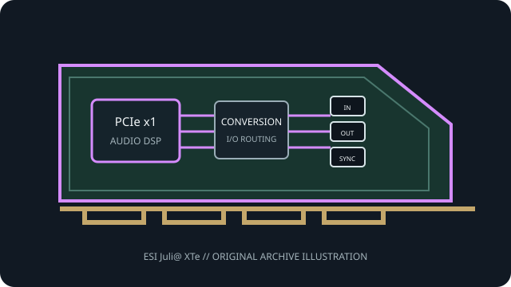

[ PROFESSIONAL AUDIO // PCIe ADD-IN ]
ESI Juli@ XTe
A model-specific PCIe version of ESI’s stereo Juli@ interface, with reversible analog connector choice and digital audio support.

MODEL SCOPE: ESI Juli@ XTe. PCIe stereo interface with swappable balanced TRS/unbalanced RCA I/O, S/PDIF, 24-bit/192 kHz conversion and MIDI. Confirm PCB/IS revision, accessories, slot wiring and current vendor driver before installation.
Model-specific specifications
| Model-specific SKU | ESI Juli@ XTe |
|---|---|
| Host interface / lanes | PCI Express x1 audio interface card. |
| Codec / conversion | 24-bit/192 kHz A/D (114 dB stated dynamic range) and D/A (112 dB); ESI does not identify converter IC part numbers on the cited page. |
| Analog I/O | Stereo analog input and output; the socket can be configured for balanced 1/4-inch TRS or unbalanced RCA operation. |
| Digital I/O / protocols | S/PDIF input/output for digital recording and AC-3/DTS passthrough, plus integrated MIDI interface; connector configuration is model-specific. |
| Resolution / sample rates | 24-bit at up to 192 kHz for analog conversion; digital channel mode and passthrough are source/device dependent. |
| Latency / monitoring | ESI describes low-latency EWDM drivers and ASIO support but publishes no fixed minimum buffer or round-trip time; host and driver settings determine measured latency. |
| Driver / OS compatibility | ESI EWDM drivers with ASIO and other Windows audio standards; manufacturer lists Windows 32/64-bit and Mac OS X support. Juli@ XTe has been superseded by Juli@ eX; keep generations distinct. |
Compatibility & preservation
Connector orientation determines balanced TRS versus unbalanced RCA wiring. Do not confuse the XTe PCIe board with the original PCI Juli@ or the replacement Juli@ eX.
- Photograph the card label, PCB revision, rear connectors and included breakout cables before service.
- Retain the exact working driver, firmware, operating-system version, clock and routing configuration.
- Confirm lane wiring, bracket clearance, channel map and external converter/network compatibility; connector fit alone is not a compatibility guarantee.
Manufacturer sources
- ESI Juli@ XTe — manufacturer specificationsManufacturer documentation for this model, driver family or revision.
- ESI Juli@ XTe — official drivers and documentationManufacturer documentation for this model, driver family or revision.